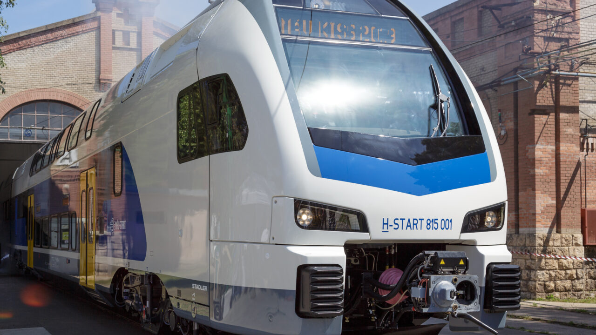

Több száz ingyenes európai vonatjegyre pályázhatnak a 18 éves magyarok
Az Európai Bizottság szerdán nyitotta meg a DiscoverEU program legújabb pályázati körét, közölte az uniós testület. A programban az idén 18 évesek között osztanak ki ingyenes utazási igazolványokat, amiket jövő tavasszal használhatnak fel.
A 2006. január 1. és december 31. között született fiatalok az EU-ból és az Erasmus+ program társult országaiból összesen 35 500 (Magyarországról 779) utazási igazolványra pályázhatnak.
Ehhez először az Európai Ifjúsági Portálon kell kitölteniük egy kvízt, ami öt, EU-ról szóló kérdést tartalmaz, valamint egy további kérdésre is válaszolniuk kell. A pályázókat az Európai Bizottság a válaszok alapján rangsorolja és ez alapján osztja ki az utazási igazolványokat. A jelentkezési határidő október 16., déli 12 óra.
A sikeres pályázók 2025. március 1. és 2026. május 31. között legfeljebb 30 napig utazhatnak majd Európa-szerte. Az ingyenes utazási igazolvány mellett a résztvevők kapnak egy kedvezménykártyát is, amellyel több mint 40000 szállást, tömegközlekedési, kulturális, étkezési, sport- és egyéb szolgáltatást vehetnek igénybe kedvezményesen.